SANCTUARY OF EXILE · THE LADDER
天梯排行 · 人物构筑
查看赛季天梯，搜索角色档案，探索各职业的技能与装备搭配。
赛季排行等级榜、BOSS 击杀榜与杀怪榜
角色档案搜索角色，查看装备与技能搭配
搜索首页的资料入口，选择结果后前往中文资料站。
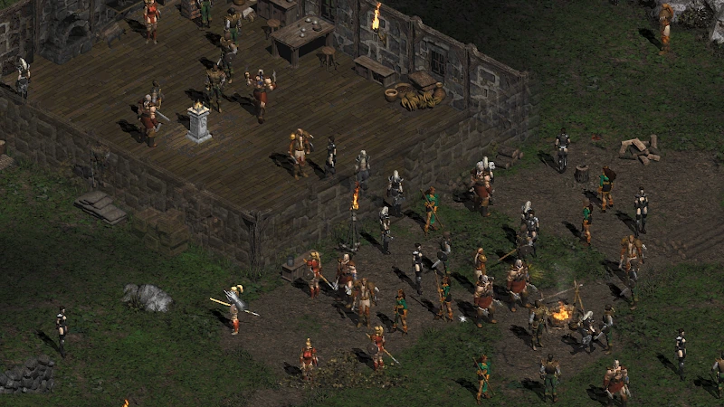
✦ NEW SEASON · THE GUILD
全新公会系统即将登场。召集志同道合的战友，准备一起开启新赛季的征程。
UNITED WE STAND
从相聚在公会大厅，到并肩踏上征途；在这里结识伙伴，共同迎接新赛季的挑战。
同一面战旗，
向更深的地狱进发。
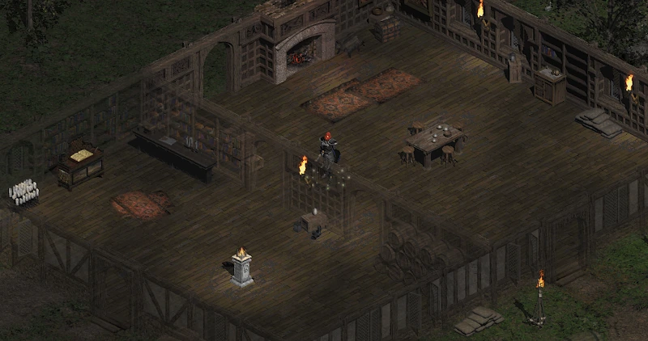
公会大厅最高可升至 12 级，驻地与功能也将随之扩展。
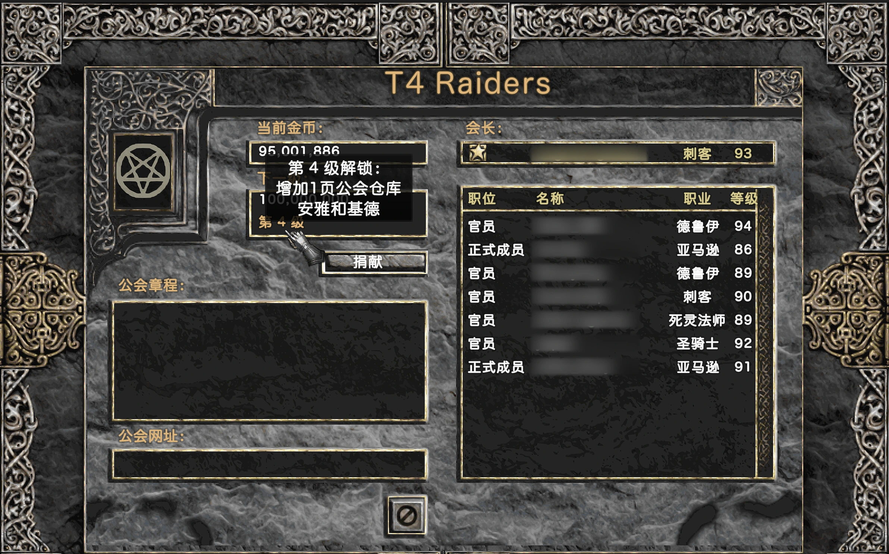
查看成员与职位，见证公会成长。
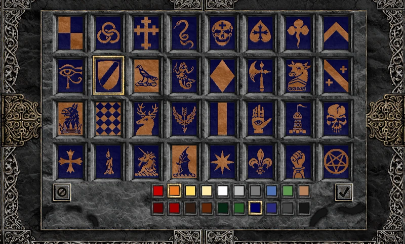
选择图案与配色，留下公会的印记。
✦ NEW SEASON · THE STASH
珍藏每一件传奇，收好每一次冒险的战利品。
01 / 装备收藏
新赛季将推出收藏仓库，支持收藏全部暗金与套装装备。随时查看你的珍藏，取出心仪的装备，继续下一段冒险。
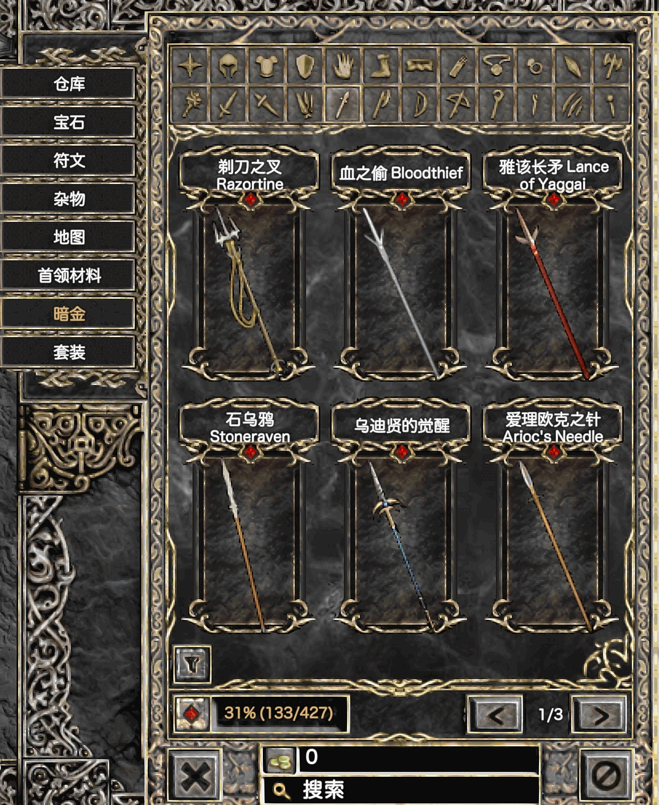
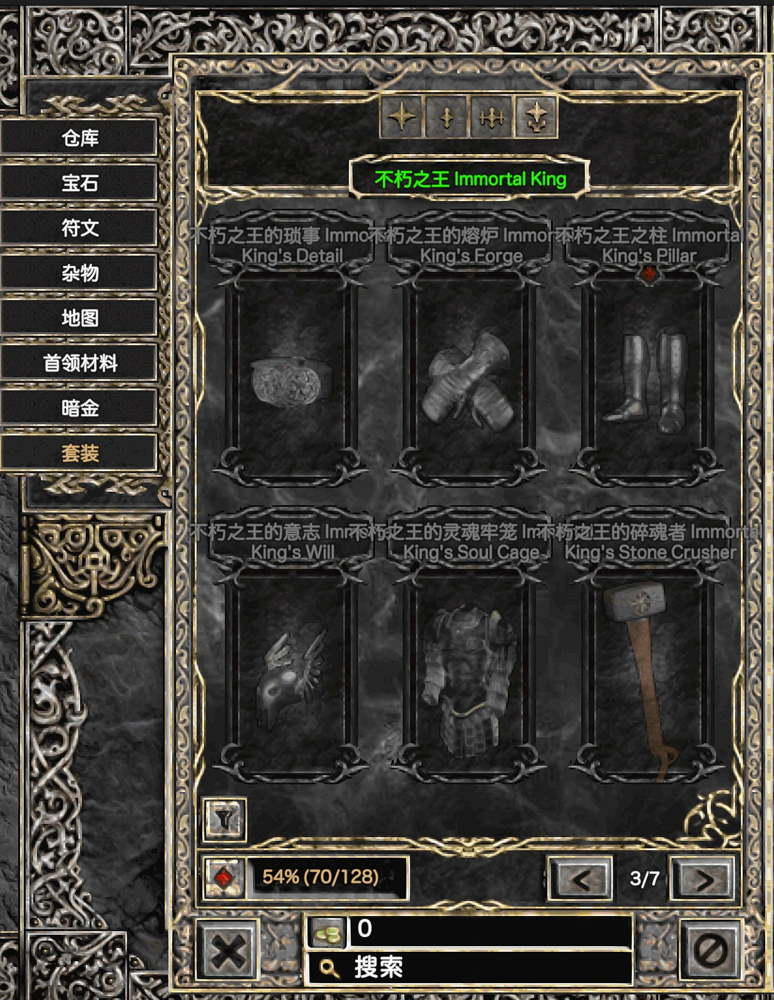
02 / 一键收纳
新赛季将支持从物品栏一键将战利品收纳至仓库，减少整理时间，把更多精力留给下一场战斗。
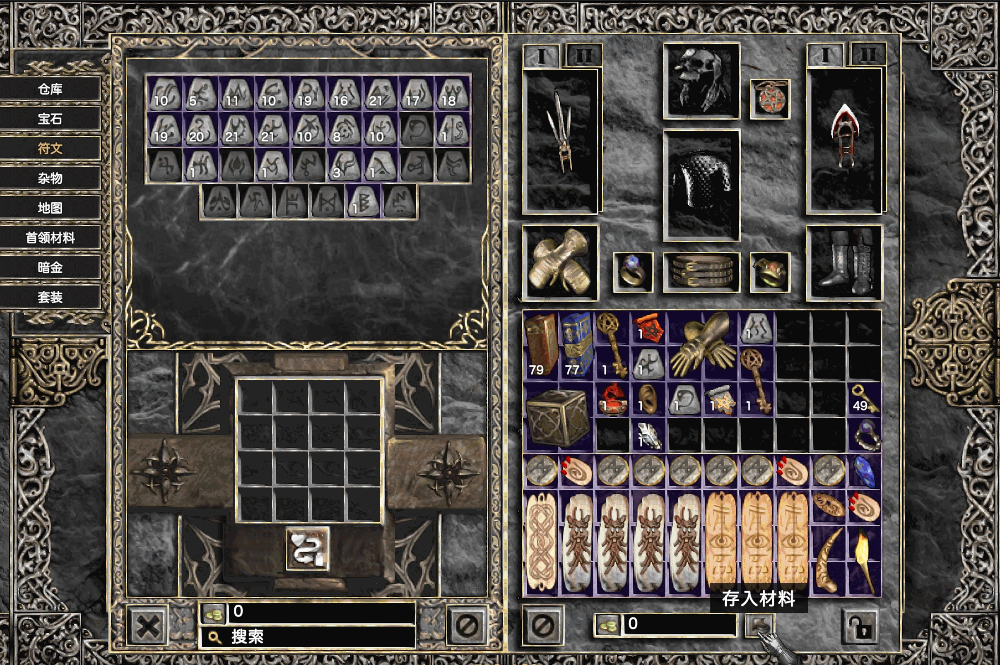
NEW SEASON · NEW DUNGEONS
穿过幽暗长桥，踏入古老遗迹。召集战友，一起探索前方未知的地下城。
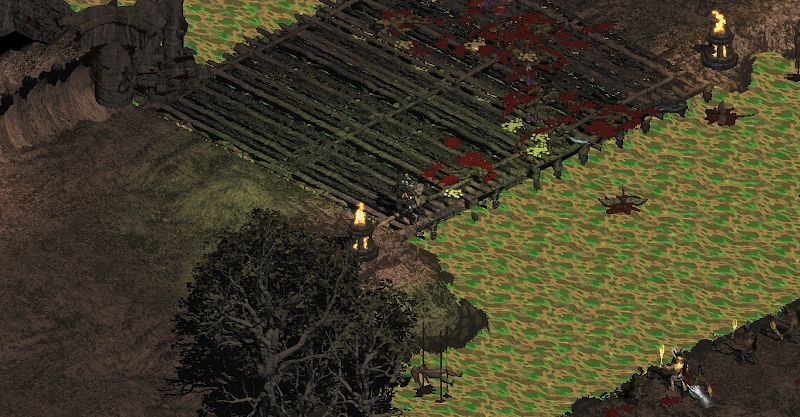
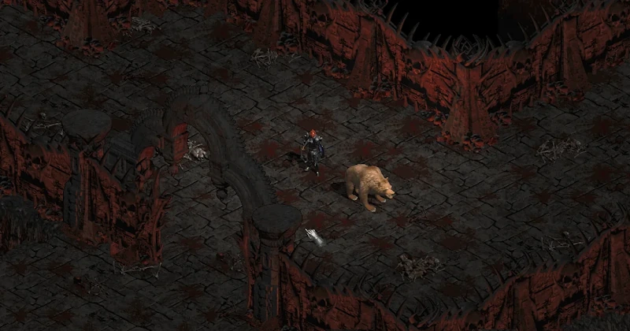
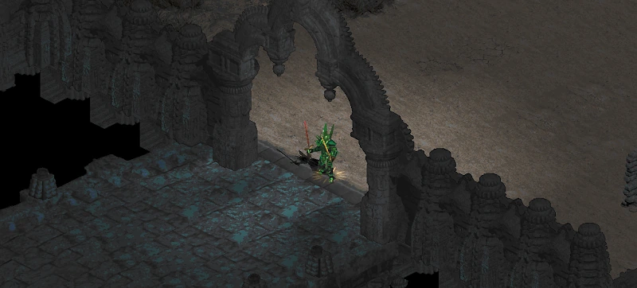
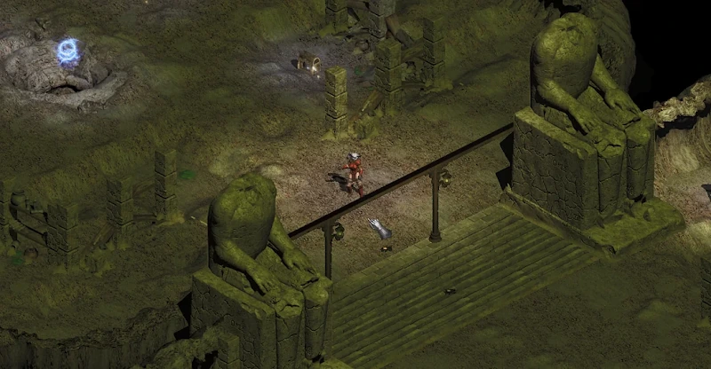
✦ SOE GAMEPLAY · 现有玩法
以《暗黑破坏神 II》的世界为起点，探索流放圣所现有的装备打造、地图与终局挑战。
THE ROAD TO TIER IV
在 SOE 中，T4 地牢可以由单人挑战，但它与 T3 之间存在明显的难度差距。T3.5 地狱地图，为通往 T4 的征途提供了一条过渡之路。
熟悉的暗金装备拥有了地狱锻铸版本；不同的词缀组合，为角色构筑带来新的可能。
更强的深渊魔群占据了这些地图；迎接挑战的同时，也有机会获得圣化宝珠。
深渊魔群的领袖藏身于自己的圣所。一场全新的超级首领挑战，以及新的暗金装备，正等待勇士。
所有职业技能树全面重做，自由搭配技能与构筑，发掘你的全新流派。
SOE SYSTEMS
从符文组合到装备锻造，每一次选择都让你的征途有所不同。
02 / 圣化系统
将圣化宝珠与符文合成为对应的符文之语印记，再用于适用的暗金、稀有或手工装备，让熟悉的装备拥有新的可能。
查看圣化物品资料 ↗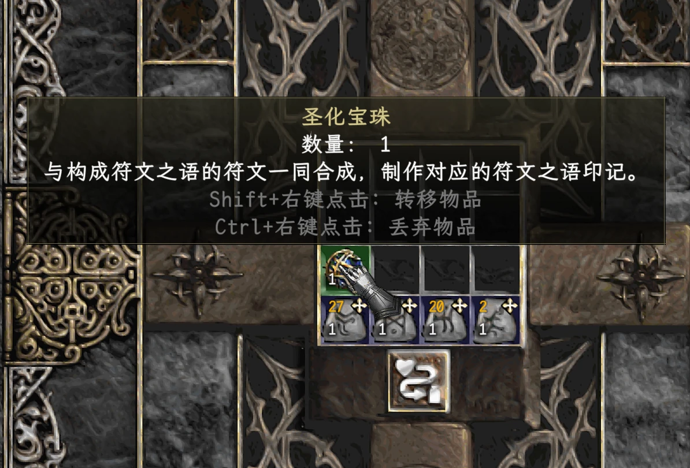
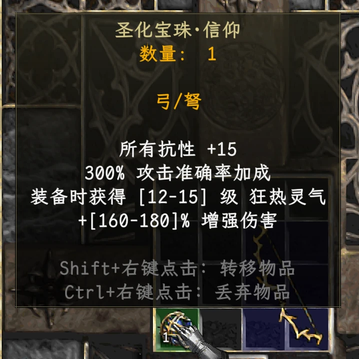
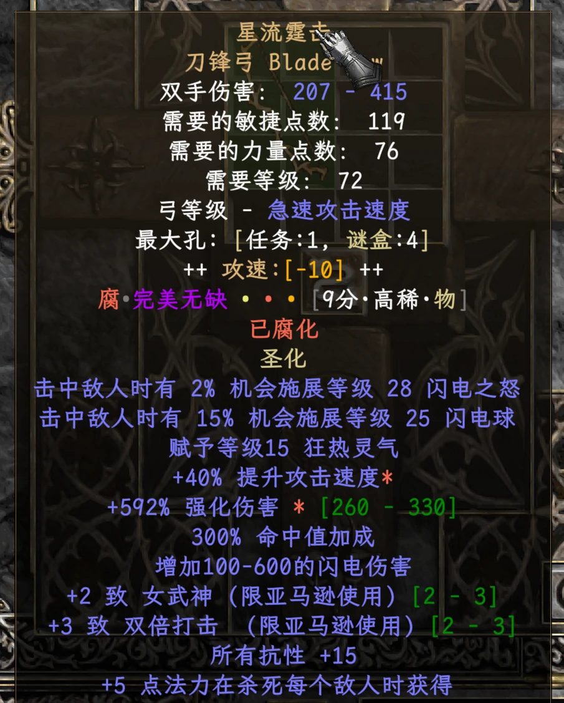
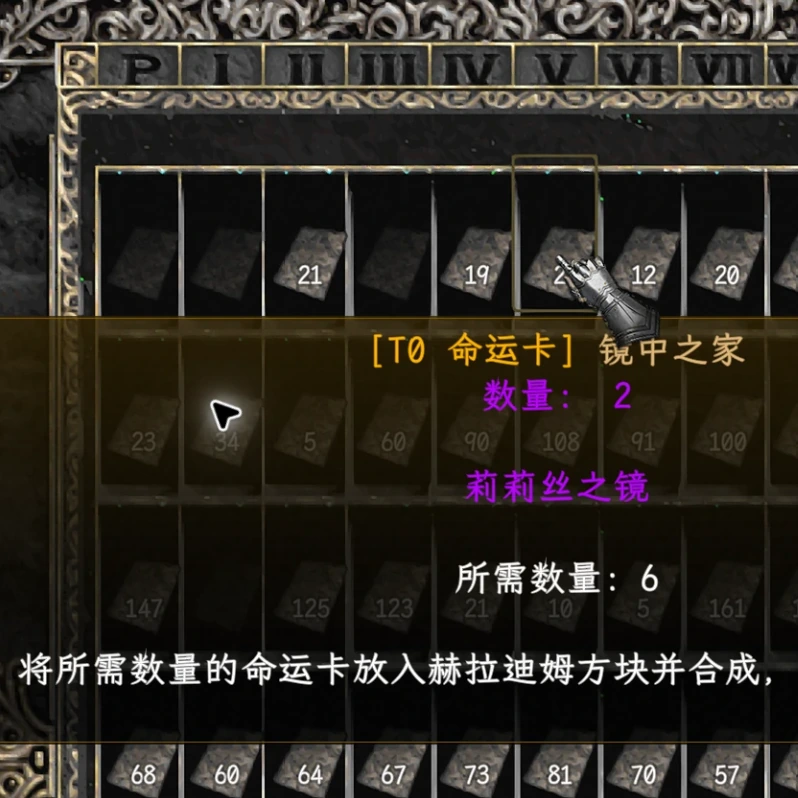
04 / 精华系统
精华可与未腐化的稀有装备合成，重掷装备属性并保证获得对应词缀，让打造更有方向。
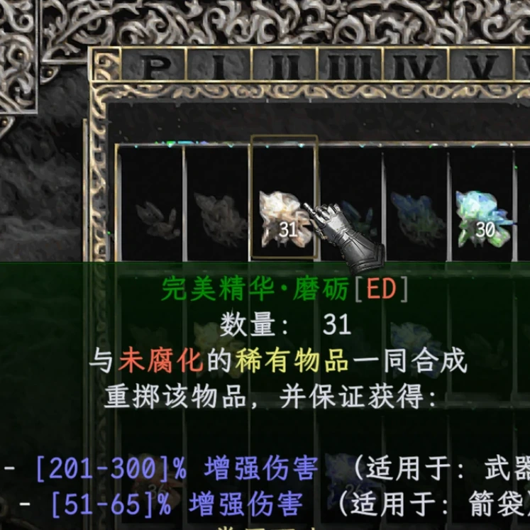
NEW SEASON · DAMNATION
新赛季将延续诅咒模式，以不同于标准模式的成长曲线，带来更循序渐进的冒险节奏。从第一件装备开始积蓄力量，在一次次探索与锻造中，走出属于你的征途。
了解诅咒模式 ↗02 BEYOND THE DARKNESS
当冒险抵达尽头，新的挑战才刚刚开始。
03 THE ARCHIVE
从第一枚符文，到最后一件传奇。你需要的知识，都藏在这里。